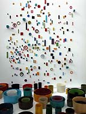
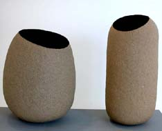
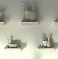
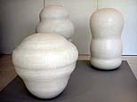

| The International
Competition of Contemporary Ceramic Art, Premio Faenza
On Monday 28th February 2005, the Jury of the 54th “Premio Faenza”
– the International Competition of Contemporary Art, assessed
the entries.
Their opinion:
"The work Silence I and II has been considered worthy
of the first prize equally for the ability to condense an expression
of extreme simplicity into a material of great delicacy and thinness
and for the new effect of depth expressed by the successful contrast
between the outer surface and the inner void ".
“Mibarrioeraasi…Asi…Asi…Esdecir…Quéseyosieraasi!…Peroyomeloacuerdoasi
('Night in my district', by Anibal Troilo) has been considered worthy
of the first prize equally for the great formal and chromatic control
of its several plastic elements that come from a light-hearted interpretation
of the tradition and that reveal awareness and active participation
in the most recent artistic happenings".
Winners of the 2005 'Premio Faenza'
Italian-Argentine Silvia Zotta and Japanese Tomoko Kawakami equally
won the Premio Faenza 2005.

Mibarrioeraasi…Asi…Asi…Esdecir…Quéseyosieraasi!…Peroyomeloacuerdoasi
('Night in my district', by Anibal Troilo) | Silence I & II
Their works were been selected from 120 works of 96 artists from
all around the world.
Lynda Draper (Australia) and Kenichi Harayama (Japan) received
premier acquisition awards for 'Still Life' and 'Root Down'.

Still Life | Root Down
History of the Award
The International Competition of Contemporary Ceramic Art has marked
the cultural history of Faenza during 20th century, setting a worldwide
ceramic benchmark especially starting from 1960s. Established in
1932 with a regional extent on the initiative of the Museum of Faenza
and the sponsorship of E.N.A.P.I. (Ente Nazionale Artigianato e
Piccole Industrie), the Competition did not appeared as an independent
event, but on the contrary it was included in a set of initiatives
of fair-promotional character, also very different each other, that
Faenza had organised for some years under the name “Settimana
Faentina” (Faenza week).
The Competition, from its very first editions, was not an extemporary
event: it came from the tradition of ceramics in Faenza and had
a basis in Gaetano Ballardini dictates. In fact, he successfully
decided to write down in the statute of the newborn Museum (1908)
“to hold international, periodical exhibitions of ceramics
combining both the two artistic sides: the technique and the practical
use” and in addition “to hold international competitions
for ceramic production from the artistic and technical viewpoints”.
In 1938 the Competition became national; it was the first time
that an event in this field was opened in Europe with a specific
character, a periodical pace and without trade purposes.
The war-interlude interrupted the development of the Competition
in 1942 but it immediately resumed in 1946, continuing regularly
until now: yearly until 1987, biennial from 1989. In 1963 the Competition
was extended to an international level.
This Event has always been, since the beginning, an important
step in the improvement, in the renewal and in the promotion of
ceramics not only as far as the artistic and decorative aspect is
concerned but also regarding the functional and furnishing viewpoint.
In addition, it boosted a complex research, both aesthetic and linked
to experiences in the field of technology of clay, of glazes, of
firings borrowed from the industry and involving the industry itself
in the design of gift and fancy goods and of tiles.
Seen not only as a spur to traditional ceramics, but in particular
as an experience, often difficult, in order to come up to this material,
to mould it, to put it in aesthetic purposes, the Faenza Competition
allowed an interesting comparison with contemporary art and, in
particular in the last fifty years, witnessed an important involvement
with sculpture.
In the turn of 20th century, except from some leading personalities
such as Arturo Martini, the term of comparison of ceramics in Italy
was the painting, whereas in the more recent decades and in particular
from the Second World War the highest level term of comparison has
been the sculpture, which prevailed over any other art. The history
of Faenza Competition clearly mirrors this phenomenon and can be
considered an important reference for a stimulating phenomenal survey.
In the Faenza Competition took part Italian artists – among
them: Angelo Biancini, Guido Gambone, Leoncillo Leonardi, Pietro
Melandri, Carlo Zauli – and foreigners – Eduard Chapallaz,
Sueharu Fukami – who made not only the history of ceramics
of 20th century, but also the one of sculpture and of painting,
with primary aspects concerning the testing and the contamination
among several, and not exclusively, ceramic materials. This last
approach could be a source of unimaginable development towards new
perspectives.
More Articles
|
{kind=link}
{kind=link}
{kind=link}
{kind=link}